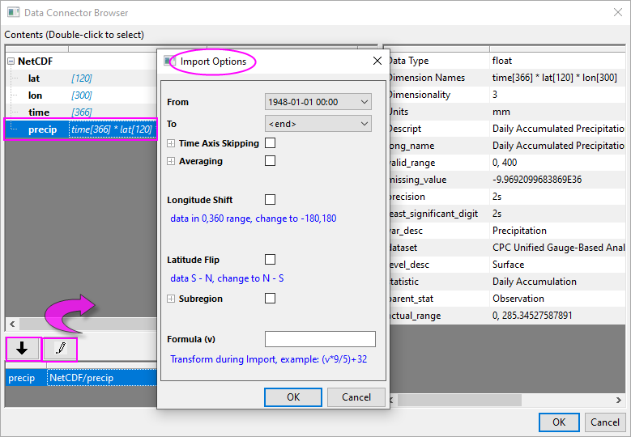

NetCDF importieren
NetCDF-Importing
In Origin unterstützen wir den NetCDF-Konnektor für den Import und den teilweisen Import.
NetCDF importieren
Eine NetCDF-Datei kann nur in eine Arbeitsmappe/Matrixmappe importiert werden. Wenn Sie eine .nc-Datei importieren, stellen Sie sicher, dass das Fenster der Arbeitsmappe bzw. Matrix aktiv ist.
Speicherort der NetCDF-Datei
Eine .nc-Datei auf einem lokalen PC oder Netzwerk importieren
- Um eine .nc-Datei auf einem lokalen PC oder Netzwerk zu importieren:
- Ziehen Sie die .nc-Datei aus dem Windows Explorer in den Arbeitsbereich, eine Arbeitsmappe oder eine Matrix von Origin.
oder
- Wählen Sie im Menü Daten: Mit Datei verbinden: NetCDF..., um die .nc-Datei auszuwählen, und klicken Sie auf OK.
- Der Dialog Datenkonnektor-Brower wird geöffnet.
Eine .nc-Datei im Web importieren
- Wählen Sie Daten: Mit Web verbinden.
- Setzen Sie im Dialog Mit Web verbinden den Dateityp auf NetCDF (optional) und geben Sie den URL-Link ein (z. B. https://psl.noaa.gov/thredds/fileServer/Datasets/cpc_us_precip/precip.V1.0.1948.nc) oder klicken Sie auf die zuletzt verwendeten URLs, falls Sie in der Vergangenheit bereits eine Datei von der gewünschten Seite importiert haben. Klicken Sie dann auf OK.
- Der Dialog Datenkonnektor-Brower wird geöffnet.
Datenkonnektor-Browser
Im Dialog Datenkonnektor-Brower werden alle Variablen im linken Bedienfeld mit den grundlegenden Informationen aufgelistet. Origin unterstützt nur das Importieren von einer Variable gleichzeitig.
Klicken Sie auf die Variable links, um zusätzliche Infos im rechten Bedienfeld anzuzeigen. sst (im obigen Bild erster Abschnitt) ist beispielsweise ein 3-dimensionaler Datensatz.
- Klicken Sie doppelt oder klicken Sie auf die Schaltfläche mit dem nach unten weisenden Pfeil, um ihn zum unteren Bedienfeld hinzuzufügen.
- Wenn eine Arbeitsmappe aktiv ist und die Datei entweder in eine Matrix oder eine Arbeitsmappe importiert werden kann, wird ein Dialog aufgerufen, in dem Sie wählen können.
- Eine neue Matrixmappe verwenden: Dies ist der direkteste Weg.
- Eine eingebettete Matrixmappe verwenden: Diese Option importiert Daten in eine Matrix. Diese Matrix ist jedoch als Blatt in eine Arbeitsmappe eingebettet.
- Arbeitsblattspalten (kann langsam sein): Diese Option importiert jeden Zeitrahmen der Matrix in mehrere Spalten, so dass sie ein Arbeitsblatt mit vielen Spalten erstellen und dadurch bei großen Datensätzen eine langsame Verarbeitungszeit verursachen kann.
- Klicken Sie auf die Schaltfläche Importoptionen (das "Stift"symbol) und wählen Sie Ihre Optionen. Hier können Sie einen partiellen Import festlegen, den Längengrad konvertieren, Ihre Matrix vertikal spiegeln oder Daten mit Hilfe einer Formel transformieren.
- 
- Klicken Sie auf OK, um die Importoptionen zu schließen, und klicken Sie erneut auf OK, um den Browser zu schließen und Ihre Daten zu importieren. Große Dateien benötigen etwas Zeit für den Import. Wenn die Datei importiert ist, wird ein Browserbedienfeld zur linken Seite der Matrix bzw. Arbeitsmappe hinzugefügt.
- Falls Sie in eine Matrix importieren, können Sie mit dem Schieber oben im Matrixfenster einzelne Matrixobjekte anzeigen.
-

- Falls Sie in eine Arbeitsmappe importieren, werden alle Spalten in ein Blatt importiert.
Weitere Importoptionen
Konnektorsymbol
Nach dem Importieren wird das Symbol des Konnektors  oben links in der Arbeitsmappe oder Matrix gezeigt.
oben links in der Arbeitsmappe oder Matrix gezeigt.
Klicken Sie auf das Symbol des Konnektors:
- Wählen Sie Auswählen... , um den zu importierenden Datensatz zu ändern. Der zuvor importierte Datensatz wird ersetzt.
- Ändern Sie die Importoptionen, indem Sie Optionen wählen.
Browserfeld
Auf der linken Seite des Browserfelds werden alle Variablen in dieser .nc-Datei aufgelistet. Sie können mit der rechten Maustaste auf weitere Variablen klicken, um sie hinzuzufügen.
- Blatt/Blätter hinzufügen und verbinden: Die ausgewählte Variable wird in ein neues BLatt der Arbeitsmappe/Matrix eingefügt.

- Zu aktivem Blatt hinzufügen: Diese Option ist nur beim Importieren in Arbeitsmappen verfügbar. Fügen Sie die ausgewählte Variable in neue Spalten des aktiven Arbeitsblatts ein.
NetCDF mit verschiedenen dimensionalen Variablen importieren
1-dimensionale Variable importieren
lat, lon und time, level etc. sind 1-dimensionale Daten. Sie können in Arbeitsmappen oder Matrizen importiert werden.
Hinweis: Wenn bei aktiver Arbeitsmappe 1-dimensionale Daten importiert werden, wird der Dialog zur Auswahl von Arbeitsmappe oder Matrix nicht aufgerufen. Origin erkennt automatisch, dass es sich um Daten mit einzelnen Zellen handelt und importiert sie in eine Arbeitsblattspalte.
- Wählen Sie bei aktiver Arbeitsmappe Daten: Mit Datei verbinden im Menü und wählen Sie eine .nc-Datei aus.
- Klicken Sie im Dialog Datenkonnektor-Brower doppelt auf eine Variable oder klicken Sie auf den nach unten weisenden Pfeil, um die zu importierende Variable auszuwählen.
- Die Variable wird im unteren Bedienfeld eingefügt.
- Klicken Sie zum Importieren auf OK.
- Klicken Sie auf das Symbol des Datenkonnektors und dann auf Auswählen ..., um einen anderen 1-dimensionalen Datensatz zu importieren. Der zuvor importierte Datensatz wird ersetzt.
- Alle Variablen werden im linken Bedienfeld der Arbeitsmappe aufgelistet. Klicken Sie auf einen anderen 1-dimensionalen Datensatz, klicken Sie mit der rechten Maustaste und wählen Sie Zu aktivem Blatt hinzufügen, um ihn in das aktuelle Blatt einzufügen.
Oder wählen Sie Blatt/Blätter hinzufügen und verbinden, um die ausgewählte Variable in ein neues Blatt in der gleichen Mappe zu importieren.
2-dimensionale Variable importieren
lat, lon etc. sind 2-dimensionale Daten. Sie können in Arbeitsmappen oder Matrizen importiert werden.
- Wählen Sie bei aktiver Matrixmappe Daten: Mit Datei verbinden im Menü und wählen Sie eine .nc-Datei aus.
- Klicken Sie doppelt auf eine 2-dimensionale Variable oder klicken Sie auf den unten weisenden Pfeil, um die zu importierende Variable auszuwählen.
- Wählen Sie Eine neue Matrixmappe verwenden, um sie zu importieren.
- Die Variable wird im unteren Bedienfeld eingefügt.
- Klicken Sie zum Importieren auf OK.
- Klicken Sie auf das Symbol des Datenkonnektors und dann auf Auswählen ..., um einen anderen 2-dimensionalen Datensatz zu importieren. Der zuvor importierte Datensatz wird ersetzt.
- Alle Variablen werden im linken Bedienfeld der Arbeitsmappe aufgelistet. Klicken Sie auf einen anderen 2-dimensionalen Datensatz, klicken Sie mit der rechten Maustaste und wählen Sie Blatt/Blätter hinzufügen und verbinden, um die ausgewählte Variable in ein neues Blatt in der gleichen Mappe zu importieren.
3-dimensionale Variable importieren
Der 3-dimensionale Datensatz kann in eine Arbeitsmappe oder eine Matrix importiert werden.
- Wählen Sie Daten: Mit Datei verbinden im Menü und dann eine .nc-Datei aus. Wie sst im obigen Bild des ersten Abschnitts ist eine 3-dimensionale Variable (z. B. time * lat * lon).
- Klicken Sie doppelt oder klicken Sie auf die Schaltfläche mit dem nach unten weisenden Pfeil, um ihn zum unteren Bedienfeld hinzuzufügen.
- Wählen Sie Eine neue Matrixmappe verwenden, um sie zu importieren.
- Die Variable wird im unteren Bedienfeld aufgeführt.
- Klicken Sie zum Importieren auf OK.
4-dimensionale Variable importieren
Der 4-dimensionale Datensatz kann in eine Arbeitsmappe oder eine Matrix importiert werden.
- Wenn die Dimensionalität der Variable 4 ist (z. B. time[248] * level[18] * lat[180] * lon[360]), wählen Sie Eine neue Matrixmappe verwenden, um sie zu importieren. Per Standard wählt Origin die erste Ebene für den Import. Es wird eine Matrixmappe mit einem Matrixblatt wird für diese Ebene erstellt. Der Ebenenwert wird als Matrixblattname gezeigt. Jeder Zeitrahmen wird in einem Matrixobjekt gezeigt. Sie können an dem Schieber oberhalb des Matrixblatts ziehen, um alle importierten Zeitrahmen anzuzeigen.
- Klicken Sie auf das Symbol des Konnektors und wählen Sie die Option Auswählen ..., um die Verbindungszeichenkette (z. B. NetCDF/t[z][10][y][x], sie gibt an, dass Ebene 10 importiert wurde) anzuzeigen.
- Sie unterstützt den Import von mehreren Ebenen als Matrixblätter. Sie können die Zeichenkette folgendermaßen ändern: NetCDF/t[z][2:5][y][x]. So werden die Ebenen 2 bis 5 importiert.
Um alle Ebenen in die Matrix zu importieren, kann die Zeichenkette in NetCDF/t[z][1:0][y][x] oder NetCDF/t[z][s][y][x] geändert werden.
- Verwenden Sie das folgende LabTalk-Skript, um alle 18 Datenebenen in eine Matrixmappe, jeweils eine Ebene in ein Matrixblatt, zu importieren.
newbook mat:=1 sheet:=18; //create a matrix book with 20 sheets. string fname$="c:\tmp\mynetCDF\aa.nc"; //specify filename wbook.dc.add("netCDF"); //add netCDF connector to the matrix book loop(i, 1, 18) { page.active=i; //activate ith sheet wks.dc.source$=fname$; //specify source file of the connector to the active sheet wks.dc.sel$="NetCDF/t[z][$(i)][y][x]"; //specify which level to import wks.dc.import(); //import }
 |
Beim Verwenden des Datenkonnektors zum Importieren der NetCDF-Variable in eine Matrix als 4D verhindert der Strukturschutz eine Veränderung des Blattes. Das bedeutet, dass es nicht erlaubt ist, ein Blatt in dieser Matrix einzufügen/zu löschen/hinzuzufügen oder ein Blatt heraus- und in eine neue Mappe hineinzuziehen.

|
Einen Pixelwert in 3D/4D-Variable in Arbeitsblattspalte importieren
Origin unterstützt das Importieren eines einzelnen Pixelwerts, z. B. bei bestimmten Längen- und Breitengraden aller Zeitrahmen, in eine Arbeitsblattspalte. Angenommen, Sie haben zum Beispiel eine 3D-Variable tas mit time[300]*lat[145]*lon[192] haben und möchten den Wert beim 2. Breitengrad und 5. Längengrad aller Zeitrahmen in eine Spalte importieren.
- Öffnen Sie bei aktiver Arbeitsmappe den Konnektor der netCDF-Daten und wählen Sie die .nc-Datei aus.
- Klicken Sie doppelt im Dialog Datenkonnektor-Browser auf die Variable tas.
- Wählen Sie in der nun angezeigten Befehlsaufforderung die 3. Option Arbeitsblattspalten (kann langsam sein).
- Fügen Sie dann im unteren Bedienfeld [x][2][5] hinzu und klicken Sie auf OK.
- Klicken Sie im linken Bedienfeld der Arbeitsmappe auf die Variable time. Klicken Sie mit der rechten Maustaste auf sie und wählen Sie Zum aktiven Blatt hinzufügen, um die Zeitspalte in das gleiche Blatt einzufügen. Setzen Sie die Zeitspalte als X und tas als Y, so dass Sie sie analysieren und zeichnen können.
- Hinweis: Für die 4D-Variable time[300]*level[20]*lat[145]*lon[192] müssen Sie z. B. [x][1][2][5] hinzufügen, um Pixelwerte beim 2. Breitengrad und 5. Längengrad auf Ebene 1 für alle Zeitrahmen in eine Spalte zu importieren.
NetCDF teilweise importieren
Zeitbereich für Datenimport festlegen
Nachdem Sie den Importdatensatz ausgewählt haben, können Sie im Datenkonnektor-Brower auf die Schaltfläche Importoptionen - Schneiden, Mitteln, Formel klicken, um den Dialog Importoptionen zu öffnen.
- Von & Bis: Zu importierender Datums-/Zeitbereich
- Zeitachsensprung: m Aufzeichnungen werden gelesen und n Aufzeichnungen übersprungen, dann wird das Ganze wiederholt.
- Wenn es sich zum Beispiel um monatliche Daten handelt, würde Lesen = 1 und Überspringen = 11 das Muster einen Monat lesen und 11 überspringen 11 für den gesamten Datums-/Zeitbereich wiederholen.
Jährlichen/monatlichen Durchschnitt während des Imports berechnen
Sie können im Importprozess den jährlichen/monatlichen Durchschnitt direkt importieren. Die Option Mitteln führt eine Mittelung basierend auf einem Intervall und entweder einem Abtastintervall Jahresübergreifend oder Aufeinanderfolgend durch.
Erweitern Sie im Dialog Importoptionen den Abschnitt Mitteln, um ihn festzulegen.
| Abtastintervall |
-
- Aufeinanderfolgend: Es wird eine Mittelung für aufeinanderfolgende Zeiten berechnet. Ein Beispiel wäre ein Datensatz mit 5 Jahren. Setzen Sie Intervall = y, das heißt kontinuierliche 12 Monate. Es entstehen 5 Matrizen mit dem jährlichen Mittelungswert.
-
- Jahresübergreifend: Es wird eine Mittelung für den gleichen Monat über Jahre hinweg berechnet. Ein Beispiel wäre ein Datensatz mit 5 Jahren. Setzen Sie Intervall = m. Dann erhalten Sie 12 Matrizen und jede Matrix ist der Mittelungswert der fünf Jahre im aktuellen Monat.
|
| Intervall |
Geben Sie die Zahl ein, um die aufeinanderfolgenden Monate anzugeben.
Geben Sie den Buchstaben ein: d = täglich, m = monatlich, y = jährlich, q = vierteljährlich
|
Hier verwenden wir zwei Stichproben, um zu zeigen, wie die Optionen Zeitachsensprung und Mitteln zum Importieren des Durchschnitts der jährlichen Daten in festgelegten Monaten verwendet werden.
Stichprobe 1: Der Durchschnittswert von 3 Monaten (April, Mai und Juni) jeden Jahres (von 1900 bis 1903) wird importiert.

Stichprobe 2: Der Durchschnittswert von 4 Jahren (von 1900 bis 1903) im April, Mai und Juni, drei Monaten, wird importiert.
|
- Seit 2023b wird beim Importieren von aufeinanderfolgenden Tagesdurchschnitten für einen Datenbereich, z. B. 2022-10-01 1:00 - 2022-10:01: 23:00 der Matrixname nur noch mit dem Datum yyyy-mm-dd, d. h. ohne Zeitangabe, angegeben, wie 2022-10-01.
- Auch bei aufeinanderfolgenden Jahresdurchschnittsdaten wird der Matrixname mit dem Jahr angezeigt, z. B. 2022. Wenn Sie diese Einstellung deaktivieren möchten, können Sie die Systemvariable @MOL = 1 ausführen.
|
Zu importierender Unterbereich
Erweitern Sie im Dialog Importoptionen den Abschnitt Unterbereich, um den zu importierenden Bereich mit Längen- und Breitengrad festzulegen. Der entsprechende Index von Breiten- und Längengrad wird in der Verbindungszeichenkette verwendet.
Bei großen Datensätzen können Anwender auch den Unterbereich verwenden und alle N Zeilen oder Spalten überspringen. Zum Beispiel bedeutet NetCDF/analysed_sst[z][2100:4800|1-40#][300:6600|1-50]: Breitengrad mit Index von 2100 bis 4800, Import von 1, Überspringen von 40. # bedeutet, dass der Breitengrad umgedreht wird, Längengrad ist der Index von 300 bis 6600, Import ist 1 und Überspringen 50.
Längengrad verschieben
Wenn der Längengrad ungefähr der Bereich (0, 360) ist, aktivieren Sie dieses Kontrollkästchen. Längengrad wird zu (-180, 180) verschoben.
Breitengrad spiegeln
Per Standard gehen die importierten Daten von Süden nach Norden. Aktivieren Sie dieses Kontrollkästchen, um den Breitengrad auf von Norden nach Süden zu ändern.
Formel
Während des Importprozesses können Sie den neuen Wert in der Matrix nach Formel berechnen.
Wenn Sie zum Beispiel die importierten Temperaturdaten von Celsius in Fahrenheit umwandeln möchten, können Sie diese Formel in dieses bearbeitete Feld eingeben. v stellt den ursprünglichen importierten Wert der Matrixzelle dar.
(v*9/5)+32
Verbindungszeichenkette
Sobald Sie die Importoptionen festgelegt und den Dialog geschlossen haben, wird die Verbindungszeichenkette unten auf der linken Seite aktualisiert, um die Syntax zu zeigen, die wir zum Anpassen des Imports verwendet haben. Sie können die Zeichenkette über einen direkten Doppelklick auf sie bearbeiten/modifizieren.
-
Auch wenn die Verbindungszeichenkette komplex sein kann, folgt sie der grundlegenden Form ...
NetCDF/variable[z][y][x]
... wobei "Variable" die Variable ist, die Sie importieren, und [z],[y] und [x] den Umgang festlegen, einschließlich partiellem Import von Daten der Z-, Y- und X-Dimension.
|
-
- Wir empfehlen die Verwendung des Dialogs Importoptionen, um den Import zum Erstellen der Verbindungszeichenkette benutzerdefiniert anzupassen.
- Wenn Sie eine 4D-Variable importieren, klicken Sie zuerst auf die Schaltfläche mit dem Stift, um den Import der ersten Ebene benutzerdefiniert anzupassen. Nehmen Sie dann die Zeichenkette und modifizieren Sie den Teil zwischen [z] & [y] für die Ebene. Modifizieren Sie z. B. die Schleife im Abschnitt 4-dimensionale Variablen importieren. Die Schleife i geht z. B. von 1 bis 9. Verwenden Sie wks.dc.sel$="NetCDF/t[1:0|ave-d][$(i*2)][y][x]", um jede zweite Ebene (2, 4, 6, ..., 18) zu importieren. Anstatt alle Rahmen zu importieren, importieren Sie den täglichen Durchschnitt.
|
Ansichtstyp
Die NetCDF-Matrix kann im Datenmodus und im Bildmodus angezeigt werden. Sie können dies über Ansicht: Datenmodus/Bildmodus ändern. Wenn Sie eine neue NetCDF-Datei importieren, wird die Matrix im Datenmodus oder Bildmodus gezeigt, abhängig von der Matrixgröße.
- Im Allgemeinen wird die Matrix im Bildmodus gezeigt.
- Wenn die Matrixdimension (Zeilen*Spalten) klein ist, wird der Datenmodus statt des Bildmodus verwendet. Die Systemvariable @VIM steuert die minimale Anzahl der Pixel, um die Bildansicht beim anfänglichen Import festzulegen. Standardmäßig ist @VIM = 400.
- Der ausgewählte Ansichtsmodus wird beibehalten, wenn Sie eine Datei erneut in die Matrix importieren. Dies wird nicht von der Matrixdimension beeinflusst.